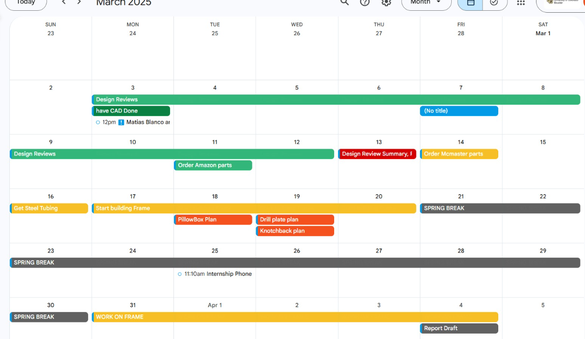
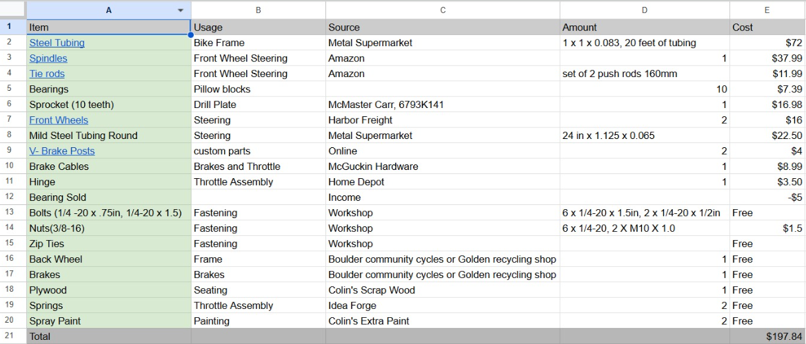
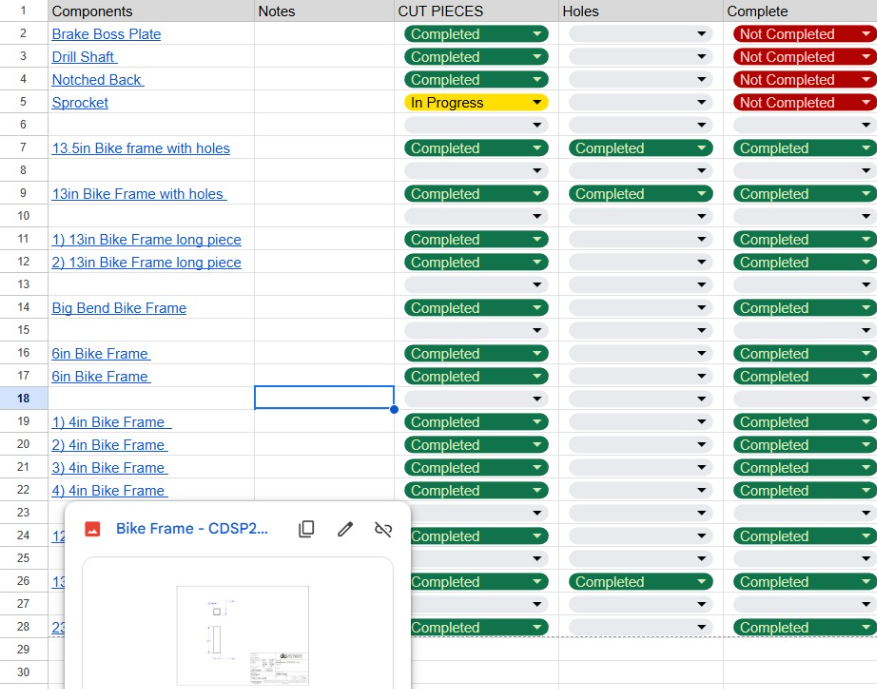

PM Highlights
Gantt Chart
Although it looked disorganized at first glance, it proved valuable for project success. The color scheme used green for soft deadlines, orange for CAD completion targets, red for hard deadlines, and yellow for flexible work periods with expected progress.

Bill of Materials
Tracked all components and expenses against the $200 budget. The initial document showed a $2 shortfall; spending ultimately reached $203 when a team member purchased a missing component rather than sourcing it from campus facilities. Lesson: plan component sourcing further in advance to minimize excess spending.

Manufacturing Control Sheet
An Excel system organized manufacturing work across 40+ individual components, linking each to its CAD drawing. Team members claimed available parts, retrieved the linked drawings, and updated status indicators as work progressed, preventing duplicate effort and keeping workflow visible across the team.
